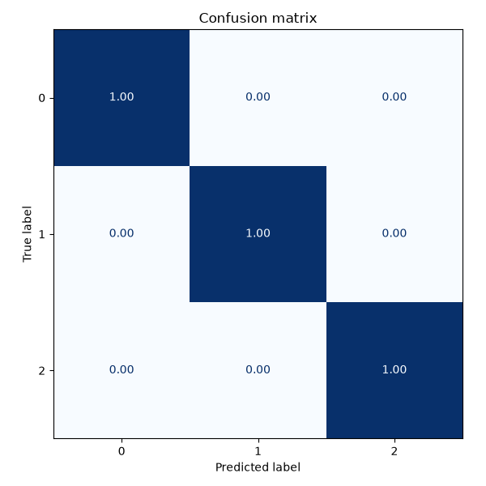
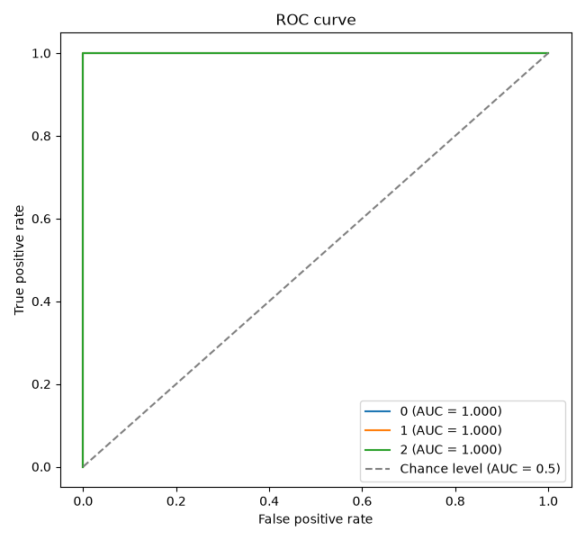
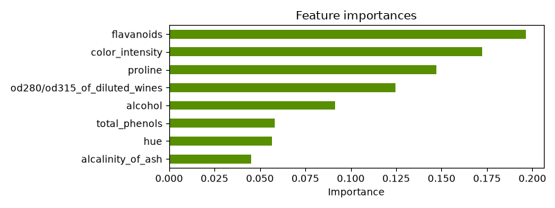

Note
Go to the end to download the full example code.
Diagnostiquer un modèle de classification#
Une fois un modèle entraîné, l’accuracy seule ne suffit pas : matrice de confusion, courbe ROC/AUC et importance des variables donnent une image bien plus complète de son comportement.
from trainedml import Trainer
trainer = Trainer(dataset="wine", model="random_forest", seed=42)
trainer.fit()
print(trainer.evaluate())
{'accuracy': 1.0, 'precision': 1.0, 'recall': 1.0, 'f1': 1.0}
Matrice de confusion#
Où le modèle se trompe-t-il, et entre quelles classes ?
trainer.confusion_matrix(normalize="true");

<Figure size 600x600 with 1 Axes>
Courbe ROC (une par classe, one-vs-rest)#
L’AUC mesure la capacité du modèle à bien classer les exemples positifs avant les négatifs, indépendamment du seuil de décision choisi.
trainer.roc_curve();

<Figure size 650x600 with 1 Axes>
Importance des variables#
feature_importances() fonctionne quel que soit le modèle : natif pour
les arbres (feature_importances_) et les modèles linéaires (coef_),
et par permutation pour les autres (KNN, SVM…).
print(trainer.feature_importances().head())
trainer.plot_feature_importances(top_n=8);

flavanoids 0.196338
color_intensity 0.172278
proline 0.147196
od280/od315_of_diluted_wines 0.124509
alcohol 0.091393
Name: importance, dtype: float64
<Figure size 800x300 with 1 Axes>
Total running time of the script: (0 minutes 0.476 seconds)